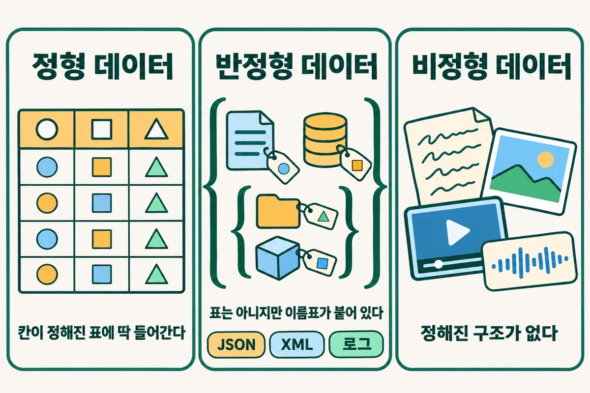
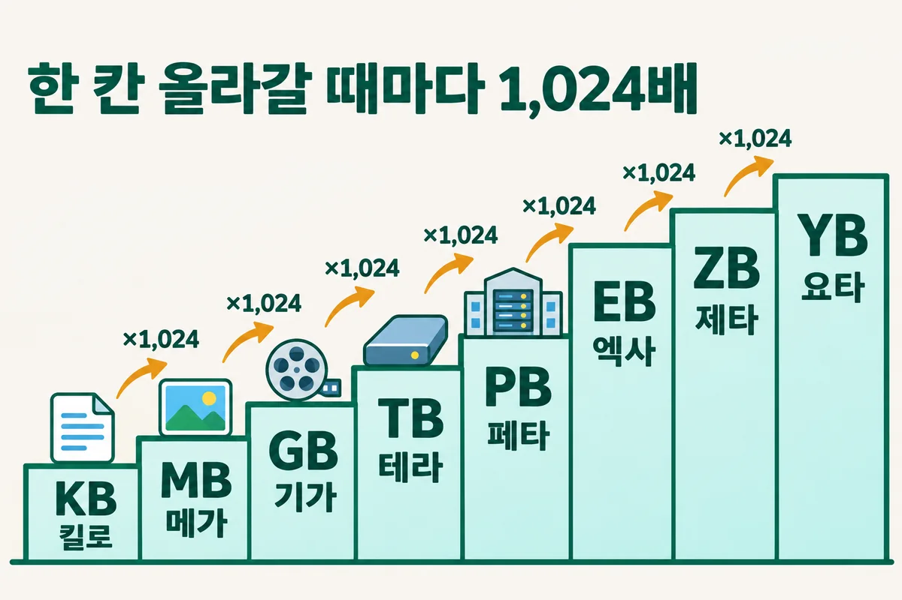

1과목 · 빅데이터 분석 기획
01
빅데이터란 무엇인가
"데이터가 많다"와 "빅데이터다"는 같은 말이 아닙니다. 무엇이 다른지, 그 차이를 설명하는 낱말(3V, 5V, 정형·비정형)과 크기를 재는 단위까지 이 장에서 다룹니다.
이 장을 읽고 나면
- 빅데이터를 "기존 방법으로는 안 되는 데이터"라고 내 말로 설명할 수 있다.
- 3V와 5V를 하나씩 뜻과 예시로 구분할 수 있다.
- 정형·반정형·비정형 데이터를 실제 모습을 보고 가려낼 수 있다.
- KB부터 YB까지 순서를 알고, 단위를 바꾸는 계산을 할 수 있다.
동네 가게 장부와 대형 마트
정의부터 외우기 전에, 먼저 장면 하나를 떠올려 봅시다.
동네 작은 가게 사장님은 하루 장사를 마치고 공책 한 권에 "오늘 라면 12개, 우유 5개 팔림"이라고 적습니다. 적을 것이 많지 않고, 전부 숫자이고, 하루에 한 번만 적으면 됩니다. 공책과 계산기면 충분합니다.
전국에 매장이 수백 개 있는 대형 마트는 사정이 다릅니다. 같은 "장사 기록"인데도 세 가지가 달라집니다.
- 양이 다릅니다. 모든 매장의 모든 계산대에서 물건이 하나 찍힐 때마다 기록이 한 줄씩 생깁니다. 하루치만 해도 공책으로는 셀 수 없는 양입니다.
- 모양이 다릅니다. 계산 기록은 숫자이지만, 고객이 남긴 후기는 글이고, 매장 카메라는 영상이고, 고객센터 통화는 소리입니다. 한 공책에 같은 방식으로 적을 수 없습니다.
- 빠르기가 다릅니다. 기록은 1초도 쉬지 않고 생깁니다. "하루 끝나고 정리"로는 늦습니다. 재고가 떨어지는 순간 바로 알아야 하기 때문입니다.
이렇게 예전에 쓰던 방법(공책, 엑셀 한 장, 컴퓨터 한 대)으로는 감당이 안 되는 데이터를 빅데이터라고 부릅니다. 위의 세 가지 차이(양, 모양, 빠르기)가 바로 뒤에서 배울 3V입니다. 지금은 이 장면만 기억해 두면 됩니다.
데이터는 왜 이렇게 많아졌을까
빅데이터라는 말이 생긴 것은 데이터가 갑자기 많아졌기 때문입니다. 많아진 이유를 알면 뒤에 나오는 특징들이 왜 그런 모습인지 이해가 쉽습니다.
- 기록하는 기기가 늘었습니다. 스마트폰 한 대가 위치, 검색, 결제, 사진을 계속 기록합니다. 사람이 일부러 적지 않아도 기기가 알아서 남깁니다.
- 사람이 직접 올리는 것이 늘었습니다. 누구나 글, 사진, 영상을 올립니다. 이런 데이터는 표로 정리된 숫자가 아닙니다.
- 기계가 스스로 기록합니다. 공장 기계, 자동차, 가전제품에 달린 센서가 쉬지 않고 값을 내보냅니다.
- 저장하는 값이 싸졌습니다. 예전에는 저장 공간이 비싸서 꼭 필요한 것만 남기고 버렸습니다. 지금은 "일단 다 모아 두자"가 가능해졌습니다.
정리하면, 데이터가 더 많이(양), 더 여러 모양으로(모양), 더 쉬지 않고(빠르기) 생기게 되었습니다. 마트 장면에서 본 세 가지 차이와 똑같습니다.
빅데이터의 뜻
정의 이해하기
빅데이터는 기존의 방법이나 도구로는 저장·처리·분석하기 어려울 만큼 양이 많고, 형태가 다양하고, 빠르게 생겨나는 데이터입니다.
이 정의에서 꼭 짚어야 할 것이 세 가지 있습니다.
"크다"가 아니라 "기존 방법으로 안 된다"가 핵심이다
빅데이터에는 "몇 TB부터 빅데이터"라는 정해진 기준이 없습니다. 기준은 크기가 아니라 다룰 수 있느냐입니다. 10년 전에는 감당이 안 되던 양도 지금 기술로는 쉽게 다룰 수 있고, 그러면 그 양은 더 이상 특별하지 않습니다. 그래서 정의가 "기존 방법으로는 어렵다"라는 상대적인 말로 되어 있습니다.
양만 보는 것이 아니다
전부 숫자로 된 깔끔한 표라면, 양이 많아도 더 큰 저장 장치를 사면 해결됩니다. 문제는 글·사진·영상처럼 표에 들어가지 않는 것이 섞여 있고, 그것이 쉬지 않고 밀려들 때입니다. 그래서 정의에 양, 형태, 속도가 함께 들어 있습니다.
좁은 뜻과 넓은 뜻
좁게는 위 정의처럼 데이터 자체를 가리킵니다. 넓게는 그런 데이터를 모으고, 저장하고, 분석해서 쓸모 있는 것을 뽑아내는 기술과 사람, 일하는 방식까지 함께 가리킵니다. "우리 회사도 빅데이터를 한다"라고 할 때는 넓은 뜻입니다. 시험에서 "빅데이터의 정의"를 물으면 좁은 뜻(데이터의 특징)을, "빅데이터의 활용·가치"를 물으면 넓은 뜻을 떠올리면 됩니다.
빅데이터의 세 가지 특징, 3V
"기존 방법으로 안 되는 이유"를 세 가지로 정리한 것이 3V입니다. 세 낱말이 모두 영어 V로 시작해서 붙은 이름입니다. 2001년에 더그 레이니(Doug Laney)라는 분석가가 이렇게 정리했고, 지금까지 빅데이터를 설명하는 기본 틀로 쓰입니다.

규모 (Volume) 외우기
규모(Volume)는 데이터의 양이 매우 많다는 뜻입니다. 마트 예시에서는 전국 모든 매장의 모든 계산 기록입니다.
양이 많으면 왜 기존 방법으로 안 될까요? 컴퓨터 한 대에 달 수 있는 저장 장치에는 한계가 있습니다. 한 대에 다 담을 수 없으면 여러 대에 나눠 담아야 하고, 나눠 담으면 "어느 컴퓨터에 무엇이 있는지"를 관리하는 새로운 방법이 필요합니다. 양이 일정 수준을 넘으면 방법 자체가 바뀌어야 한다는 뜻입니다.
다양성 (Variety) 외우기
다양성(Variety)은 데이터의 형태가 여러 가지라는 뜻입니다. 마트 예시에서는 숫자로 된 계산 기록, 글로 된 후기, 영상으로 된 카메라 기록이 함께 있는 것입니다.
형태가 다양하면 왜 어려울까요? 예전의 도구는 대부분 "표"를 다루도록 만들어졌습니다. 표는 칸이 정해져 있어서 더하고 세고 비교하기 쉽습니다. 그런데 후기 글이나 영상은 표의 칸에 넣을 수가 없습니다. 넣을 수 없으니 표를 다루던 도구로는 분석할 수도 없습니다. 형태에 대해서는 뒤의 "데이터의 세 가지 형태"에서 자세히 다룹니다.
속도 (Velocity) 외우기
속도(Velocity)에는 두 가지 뜻이 함께 들어 있습니다. 데이터가 빠르게 생겨난다는 것과, 그래서 빠르게 처리해야 한다는 것입니다.
마트에서 결제 기록은 1초마다 쌓입니다. 이것을 하루 끝에 모아서 처리하면, 낮에 품절된 물건을 밤에야 알게 됩니다. 카드 도난 결제도 마찬가지입니다. 이상한 결제는 일어나는 그 순간에 잡아야 의미가 있습니다. "모아 뒀다가 나중에 한꺼번에"라는 예전 방식이 통하지 않는 것, 이것이 속도의 문제입니다.
| 3V | 뜻 | 마트 예시 | 기존 방법이 막히는 이유 |
|---|---|---|---|
| 규모 Volume | 양이 매우 많다 | 전국 매장의 모든 계산 기록 | 컴퓨터 한 대에 다 담을 수 없다 |
| 다양성 Variety | 형태가 여러 가지다 | 숫자, 후기 글, 카메라 영상 | 표의 칸에 넣을 수 없는 것이 있다 |
| 속도 Velocity | 빠르게 생기고, 빠르게 처리해야 한다 | 1초마다 쌓이는 결제 기록 | 모았다가 나중에 처리하면 늦는다 |
왜 그럴까?
양이 많은 것만으로는 왜 "기존 방법으로 안 된다"고 하기에 부족할까요? 마트 예시로 설명해 보세요.
모범 답 보기
양만 많고 전부 숫자 표라면 더 큰 저장 장치를 사면 됩니다. 하지만 후기 글과 카메라 영상처럼 표에 넣을 수 없는 형태가 섞여 있고(다양성), 1초마다 새로 쌓여 바로바로 처리해야 하면(속도) 저장 장치를 늘리는 것만으로는 해결되지 않습니다.
3V에서 5V로
3V는 데이터가 "어떻게 생겼는지"를 말합니다. 그런데 데이터를 실제로 써 보니 두 가지 질문이 더 중요하다는 것을 알게 되었습니다. "이 데이터를 믿어도 되나?"와 "이걸로 쓸모 있는 걸 얻을 수 있나?"입니다. 이 둘을 더해 5V라고 합니다.
정확성 (Veracity) 외우기
정확성(Veracity)은 데이터를 믿을 수 있는가입니다. '신뢰성'이라고 옮기기도 합니다.
데이터가 많아질수록 틀린 것도 함께 많아집니다. 돈을 받고 쓴 가짜 후기, 고장 난 센서가 보낸 엉뚱한 온도, 직원이 잘못 입력한 가격 같은 것들입니다. 이런 것이 섞인 채로 분석하면 결과도 틀립니다. 아무리 좋은 분석 방법을 써도, 들어간 데이터가 틀리면 나오는 답도 틀리기 때문입니다.
가치 (Value) 외우기
가치(Value)는 분석해서 쓸모 있는 결과를 얻을 수 있는가입니다.
데이터를 모으고 저장하는 데에는 돈이 듭니다. 모으기만 하고 아무 결정에도 쓰지 못하면 비용만 나갑니다. "비 오는 날 어느 매장에서 무엇이 잘 팔리는지 알아내서 미리 채워 둔다"처럼 실제 행동으로 이어질 때 가치가 생깁니다. 그래서 가치를 빅데이터를 다루는 최종 목적이라고 합니다.
| 더해진 2V | 묻는 것 | 마트 예시 |
|---|---|---|
| 정확성 Veracity | 이 데이터를 믿을 수 있는가 | 가짜 후기, 잘못 입력된 가격을 걸러 내기 |
| 가치 Value | 쓸모 있는 결과를 얻는가 | 날씨에 맞춰 재고를 미리 채우기 |
시험 함정
철자가 비슷한 V 세 개. 속도(Velocity), 정확성(Veracity), 가치(Value)는 헷갈리기 쉽습니다. "3V가 아닌 것은?"이라는 문제에서 정확성이나 가치를 보기에 섞어 놓는 식으로 나옵니다. 3V는 규모·다양성·속도, 여기에 정확성·가치가 더해져 5V입니다.
교재마다 다른 V. 책에 따라 4V라고 해서 3V에 가치나 정확성 하나만 더하기도 하고, 7V라고 해서 더 붙이기도 합니다. 3V는 어디서나 같으니 이것부터 확실히 잡고, 그 이상은 보는 교재의 표를 기준으로 확인하세요.
데이터의 세 가지 형태
3V 가운데 다양성을 더 자세히 봅니다. 데이터는 미리 정해진 틀이 얼마나 있느냐에 따라 정형, 반정형, 비정형으로 나눕니다. 이 구분은 시험에 자주 나오고, 뒤 과목에서도 계속 쓰입니다.

정형 데이터
정형 데이터는 칸이 정해진 표에 딱 들어가는 데이터입니다. 실제 모습은 이렇습니다.
| 회원번호 | 이름 | 나이 | 가입일 |
|---|---|---|---|
| 1001 | 김하나 | 29 | 2025-03-02 |
| 1002 | 이두리 | 41 | 2025-03-05 |
| 1003 | 박세찬 | 35 | 2025-04-11 |
모든 줄이 같은 칸을 가지고 있고, 각 칸에 무엇이 들어갈지(나이 칸에는 숫자, 가입일 칸에는 날짜)가 미리 정해져 있습니다. 그래서 "30대 회원은 몇 명인가", "나이의 평균은 얼마인가"를 바로 셀 수 있습니다. 엑셀 표, 회원 명단, 은행 거래 내역, 회사의 데이터베이스 표가 여기에 속합니다.
반정형 데이터
반정형 데이터는 표는 아니지만, 항목마다 이름표가 붙어 있어서 구조를 알 수 있는 데이터입니다. 실제 모습은 이렇습니다(JSON이라는 형식입니다).
{
"주문번호": 5501,
"고객": "김하나",
"상품": ["라면", "우유"],
"배송메모": "문 앞에 놓아 주세요"
}
{
"주문번호": 5502,
"고객": "이두리",
"상품": ["생수"]
}두 주문을 비교해 보세요. 첫 주문에는 "배송메모"가 있는데 둘째 주문에는 없습니다. 상품 개수도 다릅니다. 표처럼 칸이 고정되어 있지 않다는 뜻입니다. 그래도 값마다 "주문번호", "고객" 같은 이름표가 붙어 있어서, 컴퓨터가 "이 값이 무엇인지"는 알 수 있습니다. 틀이 반쯤 있다고 해서 반(半)정형입니다.
JSON, XML, HTML(웹 페이지), 웹 로그, 센서가 내보내는 기록이 여기에 속합니다.
비정형 데이터
비정형 데이터는 정해진 구조가 없는 데이터입니다. 실제 모습은 이렇습니다.
고객 후기
배송은 빨랐는데 상자가 좀 찌그러져서 왔어요. 그래도 라면은 멀쩡했고 맛은 늘 먹던 그 맛입니다. 다음에도 여기서 살 것 같아요.
이 글에서 "배송 속도는 만족, 포장은 불만, 재구매 의사 있음"을 사람은 바로 읽어 냅니다. 하지만 어디에도 "배송만족도" 같은 칸이나 이름표가 없습니다. 컴퓨터가 뜻을 뽑아내려면 글을 분석하는 별도의 방법이 필요합니다. 글, 사진, 영상, 음성이 모두 비정형 데이터입니다.
세 가지를 가려내는 방법 이해하기
헷갈릴 때는 질문 두 개를 차례로 던져 보면 됩니다.
- 칸이 정해진 표에 그대로 들어가는가? 그렇다면 정형.
- 아니라면, 값마다 이름표(항목 이름)가 붙어 있는가? 그렇다면 반정형, 아니라면 비정형.
| 데이터 | 표에 들어가나 | 이름표가 있나 | 형태 |
|---|---|---|---|
| 은행 거래 내역 | 예 | - | 정형 |
| 웹 페이지(HTML) | 아니요 | 예 | 반정형 |
| 센서가 보낸 기록(로그) | 아니요 | 예 | 반정형 |
| 통화 녹음 | 아니요 | 아니요 | 비정형 |
| 매장 카메라 영상 | 아니요 | 아니요 | 비정형 |
데이터의 크기 단위
"규모가 크다"를 숫자로 말하려면 단위를 알아야 합니다. 시험에서는 단위의 순서와 단위 바꾸기 계산이 나옵니다.
비트와 바이트
컴퓨터는 모든 것을 0과 1로 저장합니다. 0 또는 1 하나를 담는 가장 작은 칸이 비트(bit)입니다. 비트 8개를 묶은 것이 바이트(byte)이고, 줄여서 B라고 씁니다. 영어 글자 하나가 보통 1바이트를 차지합니다.
바이트는 너무 작은 단위라서, 그 위로 KB, MB, GB처럼 더 큰 단위를 씁니다.
단위의 계단 외우기

한 단계 올라갈 때마다 1,024배씩 커집니다. 1,000배가 아니라 1,024배인 이유는 컴퓨터가 0과 1, 즉 2를 기준으로 세기 때문입니다. 2를 10번 곱하면 1,024가 되고(210 = 1,024), 이것이 1,000에 가장 가까워서 한 단계의 크기로 씁니다.
| 단위 | 읽기 | 바이트로 | 바로 아래 단위로 | 어느 정도인가 |
|---|---|---|---|---|
| KB | 킬로바이트 | 210 B | 1,024 B | 글만 있는 문서 한 장 |
| MB | 메가바이트 | 220 B | 1,024 KB | 사진 한 장 |
| GB | 기가바이트 | 230 B | 1,024 MB | 영화 한 편 |
| TB | 테라바이트 | 240 B | 1,024 GB | 외장 하드 한 개 |
| PB | 페타바이트 | 250 B | 1,024 TB | 데이터 센터 |
| EB | 엑사바이트 | 260 B | 1,024 PB | 한 회사가 아니라 나라나 전 세계의 데이터를 말할 때 쓰는 크기 |
| ZB | 제타바이트 | 270 B | 1,024 EB | |
| YB | 요타바이트 | 280 B | 1,024 ZB |
외우는 법
앞 글자만 따서 "킬·메·기·테·페·엑·제·요". 테라(TB)까지는 일상에서 써서 익숙합니다. 시험에서 묻는 것은 그 뒤 "페·엑·제·요"의 순서입니다.
"바이트로" 칸의 지수는 한 칸마다 10씩 늘어납니다. KB 10, MB 20, GB 30, TB 40, PB 50, EB 60, ZB 70, YB 80. 순서만 알면 지수는 10을 곱해서 바로 나옵니다.
단위 바꾸기 계산
규칙은 하나입니다. 큰 단위를 작은 단위로 바꿀 때는 한 칸에 1,024를 한 번 곱하고, 작은 단위를 큰 단위로 바꿀 때는 한 칸에 1,024로 한 번 나눕니다. 두 칸이면 두 번입니다.
풀이 예제
사진 한 장이 4MB일 때, 1TB짜리 저장 장치에는 사진이 몇 장 들어갈까요?
① 단위를 맞춘다. TB를 MB로 바꾸려면 TB → GB → MB, 두 칸을 내려간다.
② 1TB = 1,024GB
③ 1,024GB = 1,024 × 1,024MB = 1,048,576MB
④ 1,048,576MB ÷ 4MB = 262,144장
약 26만 장입니다. 계산의 핵심은 ①입니다. 나누기 전에 두 수의 단위를 먼저 같게 만들어야 합니다.
같은 방법으로, 마지막 단계만 직접 채워 보세요.
더 알아보기 · 시험 범위 밖
가게에서 산 "1TB" 저장 장치를 컴퓨터에 꽂으면 약 931GB로 표시됩니다. 고장이 아닙니다. 저장 장치를 만드는 회사는 한 칸을 1,000배로 세고, 컴퓨터는 1,024배로 세기 때문에 생기는 차이입니다. 시험에서는 이 노트처럼 한 칸을 1,024배(210)로 계산하면 됩니다.
한눈에 정리
| 묻는 것 | 답 |
|---|---|
| 빅데이터란 | 기존 방법으로는 저장·처리·분석하기 어려운 데이터 |
| 3V | 규모(Volume), 다양성(Variety), 속도(Velocity) |
| 5V에서 더해지는 것 | 정확성(Veracity), 가치(Value) |
| 데이터의 세 형태 | 정형(표), 반정형(이름표), 비정형(구조 없음) |
| 단위 순서 | KB → MB → GB → TB → PB → EB → ZB → YB |
| 한 칸의 크기 | 1,024배 (210) |
한 줄 정리
빅데이터는 규모·다양성·속도(3V) 때문에 기존 방법으로 다루기 어려운 데이터이고, 믿을 수 있어야(정확성) 하며 결국 가치를 얻으려고 다룬다.
다 읽었다면 위쪽 핵심어 가리기를 켜고 이 표를 다시 보세요. 형광펜 칠한 곳이 빈칸이 됩니다. 머릿속으로 채운 뒤 눌러서 확인합니다.
확인 문제
본문 중간에서 푼 문제 말고 남은 문제입니다. 보기를 누르면 바로 정답과 해설이 나옵니다.